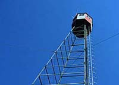

Concept
Beaver
Moose
Ovenbird
Pileated Woodpecker
Snowshoe Hare
Woodland Caribou
Ecosystems can be very sensitive to change and disruption. Even seemingly minor fluctuations of conditions can upset the delicate balance of a complex ecosystem, such as a forest. Changing the forest significantly can cause irreparable damage if the changes are not monitored and controlled. Foresters and forestry companies have invested a great deal of time and study into methods of monitoring a forest's health in both logging areas and in forest preserve areas. |
 The monitoring is accomplished through observation of certain species deemed to be representative of a significant portion of the wildlife species in the forest. In Saskatchewan, there are six of these observed species, called indicator species. |
The six indicator species are used in Saskatchewan by foresters to monitor the different habitats of each species, and thus manage harvesting practices and silvicultural methods that will maintain or enhance existing wildlife forest habitat. |
The indicator species each represent a multitude of animals with similar habitat requirements. This means that when foresters study the habitat, needs and behavior of the indicator species, they can extrapolate the habitat, needs and behavior of the other species. |

Saskatchewan Forest Habitat Project partners are looking at ways to make wildlife-friendly timber cutting plans. If they succeed, forest lands that produce timber will always be rich in wildlife. |
The Saskatchewan Forest Habitat Project has selected six wildlife indicator species. They are:
Each indicator species represents a type of forest habitat. Snowshoe hares represent dense coniferous cover next to new deciduous shrub growth. Lynx, warblers and grouse are a few of the species that share this habitat type. Pileated woodpeckers are the indicator species for 33 animals (click button above) that use tree cavaties during their life cycles. |